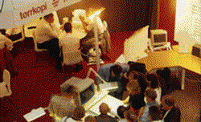

Det er en selvfølge at moderne utstyr til kontoret er en effektiv måte å møte dagens konkurranse i markedet på. Her skjer det mye for tiden med nye muligheter og integrasjon. En kopimaskin er f.eks. ikke lenger "bare" en kopimaskin... Kontor og Data'96 skal i sin målsetning være en komplett messe og omfatte det meste innenfor hva markedet har å vise norsk næringsliv det siste nye innenfor kontormaskiner, -utstyr og tilbehør som bl.a.:
Kopieringsmaskiner og -utstyr * Audiovisuelt utstyr * Kopi- og reproduksjonsutstyr * Papirvarer og kontorartikler * Postbehandlingssystemer og utstyr * Fax og telefonsystemer * Tidsregistrering * Grafisk utstyr * Rekvisita m.m.